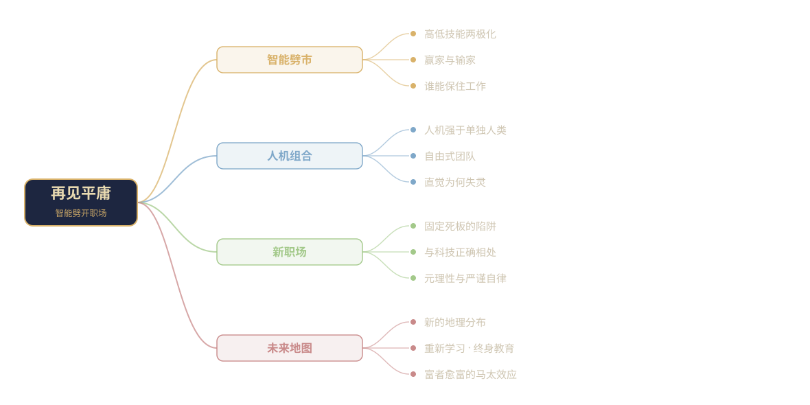

再见，平庸时代
〇 · 书籍信息
基本信息
| 书名 | 《再见，平庸时代：在未来经济中赢得好位子》（Average Is Over） |
|---|---|
| 作者 | 泰勒·考恩（Tyler Cowen），哈佛大学经济学博士，乔治·梅森大学教授，主持莫卡特斯中心（Mercatus Center），经济学博客「边际革命」主理人，前作《大停滞》 |
| 译者 | 贺巧玲（译者序署名，于加拿大麦吉尔大学，2015 年 12 月） |
| 出版 | 浙江人民出版社，2016 年 1 月，ISBN 9787213070167；三部十二章，外加中文版序、译者序与致谢，约 14.6 万字 |
| 体裁 | 经济评论。以国际象棋人机对战为原型（「象棋是人工智能界的实验果蝇」），推演智能机器时代劳动力市场、教育、科学、城市与政治的结构性变化 |
| 一句话 | 劳动力市场正在分成两个群体：与机器互补的人工资上行，与机器竞争的人工资下行；未来属于那些能与智能机器组成「自由式团队」的人——关键不是会编程，而是能快速解读机器反馈、并与机器互补。 |
一 · 核心主题总览
全书十二章散而不乱，底层只讲六组概念。抓住它们，全书就能压成一张纸：
① 一个分水岭：与电脑互补，还是与电脑竞争
全书的第一命题：你是与电脑合作，并且增加机器的价值，还是与电脑竞争？技能与电脑互补者工资和前景光明；无法互补者必须解决匹配问题。这不是「AI 抢工作」的恐吓，而是一条收入分配的分水岭——皮尤研究给出的赢家比例约为美国家庭的 15%～20%。
② 稀缺性资源的经济学：钱流向哪里
低成本产生的大部分利润将落入稀缺资源所有者手中：高质量土地与自然资源、知识产权、高素质劳动者。非稀缺的是非技术劳动与简单资本（实际收益率趋零）。推论：技术型、创造型劳动者得到高工资，普通劳动者与普通储蓄只能得到低回报——这是全书收入分配判断的总框架。
③ 自由式象棋：人机协作的原型
全书的方法论意象。2005 年起，两个美国业余棋手组成的「扎克斯」团队靠协调多台象棋引擎击败特级大师——赢家的特质不是棋力，而是快速处理机器信息的能力与元理性（知道何时该听机器的、何时该推翻它）。人机合作的团队是最好的团队，且操作机器的人不需要是任务领域的专家；但技能低于临界值的人加入团队反而拖累机器。
④ 工作场所的新美德：严谨自律与士气
团队生产时代，一个不可靠的员工能毁掉整个团队，雇主变得极度挑剔——「没有排斥就没有士气高昂，没有忠诚正直也就没有公司文化」。女性的严谨自律性优势使她们在新时代获得更好的工作与工资；「无理由的反叛」在劳动力市场上不再有位置。
⑤ 劳动力市场两极化与机器评估
劳动力市场两极化（大卫·奥托）：劳动者分化为「极好」与「极差」两极，中间塌陷——衰退期消失的中产工作在复苏后不再回来。另一面是「机器评估」的普及：棋手有等级分，未来的医生、律师、教师也将被人机组合打分——它不会让每个人的出价能力相等，但能让信息相等，穷人反而可能是最大受益者。
⑥ 教育、科学与政治：两极分化的再生产
在线教育「极度平等又奇特」：它让自律、动力十足的高智商新贵超越精英社区，却对没有兴趣的学生毫无办法；教授将从知识传授者变成激励者与教练。科学将因专业化与机器研究而超越普通人的理解——「个体科学家成为附庸」。财政与政治的终局：更多富人也更多穷人，社会老龄化而非革命；自我激励将成为预测向上流动的最佳测度。
二 · 第一部 欢迎来到超级精英时代
立论篇：机器智能与全球化两股力量如何把劳动力市场劈成两半——谁受益、谁受损、中间发生了什么。
一、智能时代的工作与报酬
- 开篇给出全书三条「惊人的时代」判断：平庸时代终结；商业竞争必将使用机械智能；技能与电脑互补者前景光明，无法互补者必须解决匹配问题。
- 数据先行：高中毕业生工资十年间实际下降 11%，大学毕业生下降逾 5%，大学毕业生失业率长年徘徊 10% 上下——「学历护城河」已经失效。
- 机械智能的进展清单：深蓝胜卡斯帕罗夫（1997）、沃森胜《危险边缘！》冠军、无人驾驶合法化、叙述科学公司自动写稿、预测性警力部署、塔吉特用购物记录推算孕妇预产期——共同点：进步快、管制少。
- 「一个现代纺织厂只需要雇用一个人和一只狗——人的工作是喂狗，而狗的作用是使人远离机器。」这个笑话是本章的浓缩。
- 机器的边界也很清楚：越需要推断他人心理状态的任务，机器越需要人类协助——扑克最好的选手仍是人类，因为电脑不懂虚张声势。
二、人生的赢家与输家
- 稀缺性三资源 vs 非稀缺性两资源：土地与资源、知识产权、高素质劳动者得高回报；非技术劳动与简单资本回报趋零。一架「掠夺者」无人机飞行 24 小时需要 168 名幕后人员——机器创造的新岗位多于它消灭的。
- 受益者画像：不只 STEM，关键是把技术性知识与解决现实问题联系起来——扎克伯格学的是心理学。作者断言：市场营销才是未来经济中至关重要的部门。
- 「注意力经济学」：收入不平等与注意力争夺是一枚硬币的两面——亿万富翁经过加尔各答街头，乞丐争抢的正是他的注意力。
- 管理者工资上涨的解释：管理是稀缺性投入——「就算不需要金钱投入，我也没有时间再去组建另一个团队」。1979—2005 年美国最高 10% 收入增量中，总监、经理、主管与金融专家占 70%。
- 女性优势论：人格心理学证实女性平均更严谨自律、更愿意团队合作——团队生产时代，这一品质直接变现为工资。
- 残酷的另一面：经济危机中失业者 60% 来自中等收入职业，复苏后新增工作 75% 属于低收入职业；1990—2011 年劳动收入占国民收入份额从 63% 降到 58%。「要是有一幅图能够总结当下经济的困境，那只能是这一幅。」
三、哪些人能保住工作
- 人机协作四阶段演化：机器无用武之地 → 专家与机器合作弥补空缺 → 操作者只需最低领域知识（本质是信息处理器）→ 程序强大到不再需要人类。不同产业正处在不同阶段。
- 结构性真相：2009 年衰退后「平均每工时劳动生产率」连续三个季度上升 5%～8%，不是因为新发明，而是因为解雇了产出低于工资的工人——衰退成了中产工作消失的中间机制（杰莫维切与肖的研究）。
- 劳动参与的塌陷：25—64 岁无工作比例从 20 世纪 60 年代的 9% 升到 18% 以上；1969—2009 年典型男性工作者工资下降约 28%；领取联邦伤残津贴者从 500 万升到 820 万。
- 自由职业与「微职业」兴起（取蚯蚓肥 70 美元、捞下水道钥匙 80 美元）——「飘摇一代」推迟成年，因为看不到报酬丰厚的工作机会。
- 结论章首三条：智能机器不会一次占据整个经济；大量中等收入工作终将消失，精英受惠、低技能者勉强糊口；服务业微职业正在兴起。
三 · 第二部 游戏教会了我们什么
方法论篇：以象棋为「实验果蝇」，拆解人机协作的正确姿势、人类直觉的缺陷、被机器规范化的职场，以及应对激进预言的冷静判断。
一、新工作，老游戏
- 克隆罗德：「象棋是人工智能界的实验果蝇」——胜负可精确测量，是观察人机互动的理想标本。
- 机器对战（「鳕鱼」对「火花」）精彩绝伦却几乎无人观看——人类不爱围观完美，爱围观戏剧性；这一偏好将决定人机协作在职场中的形态。
- 「这是电脑的下法」——象棋大师用来形容丑陋却有效的着数；丑陋的机器几乎每次都赢，因为机器反复证明我们的直觉有多不可靠。
- 核心预言：未来获得巨大回报的，是那些能快速解读机器反馈的人——以及能承受「电脑不停建议你拒绝这笔交易」所带来的压力与尴尬的强悍者。
二、我们的自由式未来
- 自由式象棋规则：可以查阅书籍、使用电脑、请教特级大师，唯一重要的只是着数——这是对人机协作最极端的实验室。
- 赢家画像颠覆直觉：等级分仅 1685/1398 的业余二人组扎克斯击败 2600+ 特级大师；安森·威廉姆斯棋力不过俱乐部水平，却凭四核笔记本在 51 场顶级比赛取得 23 胜 1 负。关键能力是协调与快速处理多引擎信息，外加了解每台机器的脾气。
- 作者的自我实验「我＋碎纸机」对「碎纸机」：胜率占优，因为他在四五个关键时点能推翻程序的战略判断——这需要元理性：大多数时候听机器的，只在特定情形（局势复杂、残局程序失灵、程序贪子）时出手。
- 对工作世界的四条教训：人机团队最好；操作者不必是领域专家；技能低于临界值者加入反而更糟；了解自己的极限比以前更重要。
- 医疗诊断的人机灰色地带：谷歌已成美国「接受咨询最多的医生」；与电脑共事者「不需要是一个医生」——她需要的是理解并纠正机器错误的能力，这将对认证体系构成根本冲击。
三、为什么直觉无法帮你找到一份工作
- 肯·里根用「里布卡」分析海量人类棋谱的发现：人类的错误中有一种理性和秩序，重大「黑天鹅」式错误对结果影响有限；选手在关系最重大的时刻反而最强硬。
- 反面教训：即使是顶尖大师，也只有约 55% 的时间与引擎推荐一致。「他们离完美如此遥远，这让我感到吃惊。」——问题不是大错，而是人类花太多时间思考「看起来很好」的下法。需要怀疑的，正是我们的严谨思考和谨慎判断。
- 行为经济学的边界：电脑象棋指出的是世界级专家的缺陷——助推者自己也是问题的一部分；他们的模型太简洁、太直观。
- 进步的证据：人类棋手最高水平持续提高（1850 年代的摩菲按等级分只相当于今天的州级选手）；「弗林效应」下智商每十年升 3 分；女棋手实力大增——人类可以向机器学习并超越自身天性。
- 决策四则：优缺点呈现规律性；别太相信简洁直观的理论；跳出思维限制、比自己想得更难；要享受混乱。
四、新职场：固定、死板、令人沮丧
- 从有线电视客服的按键地狱讲起：新时代的最大挑战是适应一个为机器顺利运行而设计的世界——环境的「帮助菜单化」同时变得更简单、更死板、更令人沮丧。
- GPS 的启示：机器需要一个像棋盘一样「字面精确」的环境；我们正在把世界改造得更像棋盘——代价是人的自主性感受损。
- 自助服务的经济学：雇佣的固定成本（健保、培训、诉讼风险）太高，于是任务被转嫁给消费者——文职和服务工作者不仅要与机器和海外劳动者竞争，还要与消费者竞争。
- 机器评估社会：机器评估与评级社会正在到来——律师的案情摘要排名、医生被病人质量调整的评级、费埃哲的「服药依从性评分」、诺德斯特龙的「客户麻烦指数」——专业人士将失去光环，大多数医生与最高等级相比只是 B-、C-。
- 分配效应：评级让信息平等化，穷人反而受益；但医生也会反向挑选病人——「经病人质量调整的医生评级」是一个深刻的制度设计问题。
- 责任的黑洞：顶尖人机团队（2035 年的诊断师、无人机的开火决策）超越外部评判能力——「没有人为那些至关重要的决定承担责任」。
五、如何与科技正确相处
- 对激进预言的三连驳：尤德考斯基的「天网瀑布效应」、汉森的马尔萨斯工资世界、库兹韦尔奇点上传——世上没有真正的吸血鬼，没有龙，也没有哈尔；这些是电脑狂人的宗教寓言。
- 渐进进步论：技术之所以可忍受，正因为它是渐进的，我们可以边走边学——「进步通常是好事，但逐渐的进步往往更好」。
- 图灵测试的再解读：不能模仿并不代表没有智能；一台机器在不模仿人类时最有效率——人与机器不必趋同。
- 人机分工的后果：高收入者在认知层面变得更像电脑（学习理解机器运作）；私人生活中我们变得更不像电脑（记忆、计算、检索都外包给机器）——「我们正在把大脑的一些部分外包给机械设备」。
- 「谷歌拐杖」：我们不再记忆事实，而是记忆「如何搜到事实」——从记忆术到搜索术，是几百年西方思想的一次反转。
四 · 第三部 工作的新时代
落地篇：地理、教育、科学、财政与政治——两极分化如何在空间与制度层面完成自我复制。
一、新的地理分布
- 外包确实压低了部分工资（奥托等人的中国进口研究、曼德尔的外包型生产率之谜），但「对中国或外包的指责只不过指出了一个表象」——最终原因是机器需求上升、人的技能错配。
- 反直觉的移民论：外包越是成为威胁，移民越重要——移民从事低工资职业，反而把支撑性工作留在本土。
- 城市极化：高学历者向高学历地区聚集，1970 年前后城市间教育差距几乎翻倍；网络红利只覆盖 42% 人口的地区——「距离」在新的维度上重新生效。
- 地缘推演：经济活动向人口最多的亚洲转移；但美国可能迎来「新的美国世纪」——机器密集的工厂回岸（reshoring），真正的输家是只靠劳力竞争、无法跃上资本与技术阶梯的低工资国家。
二、重新学习
- 在线教育四大经济学特征：极度便宜（边际成本趋零）、极度灵活、教学创新的利润巨大、学习可以被精确测量（可汗学院已经在测量哪些视频有效）。
- 商场模式（Emporium model）：弗吉尼亚理工大学把百货商店改成 537 台电脑 24 小时开放的数学课堂——被讥为「奥威尔式」的模式已经落地。
- 「在线教育可以极度平等，但这是一种奇特的平等」：斯坦福网课最好的学生来自海外穷国；但它帮不了没有兴趣的学生——「还有很多人根本不会有任何进步——他们不愿意坐在屏幕前面」。
- 教师的转型：电脑接管知识与对错判断后，人类教师只剩三个角色——榜样、激励者、教练；「人工智能将使这些角色成为教授仅有的角色」。知识传授外包给程序，面对面教育的核心变成激发动机、培养严谨自律。
- 分级的教育终局：好学生像象棋天才一样与机器自学；差学生接受「海军陆战队式」的纪律训练——「记住，平均时代已经终结」。
- 两个活标本：拉里·考夫曼（MIT 经济学本科→华尔街→里布卡评级功能开发者）与尼尔森·赫尔南德斯（伞兵→股票经纪人→开局数据库建设者）——未来赢家是「对自我进行再教育的高手」。
三、大众科学的终结
- 科学超越普通人理解的三个原因：问题复杂化、贡献专业化、机器本身成为研究者。
- 证明的社会学：一条重要定理的证明依赖几百个前提与劳动分工，「没有任何人知道这条定理是否正确」——佩雷尔曼与「P 不等于 NP」悬案。
- 诺奖得主的年龄结构变化：物理学获奖成果平均年龄从 1905 年的 37 岁升到 1985 年的 50 岁——突破性科学已转入中年人手中。
- 机器科学：人类从「指导电脑做研究」退到「为电脑提供数据、解释电脑的研究」；弦论式的晦涩将成为常态——「由于日益增长的神秘性，科学最终也会看起来像是宗教和魔法」。
- 经济学的未来：数据吞咽正在把理论直觉挤出研究过程；未来「我们将不再阅读论文，而是让程序输出元分析结果」——真正的变化将是，个体科学家成为附庸；幸存者是「自由式研究者」：消化机器输出、判断着数正确性的翻译者。
四、更多富人，也更多穷人的未来
- 社会契约重写：从「期待每个人都过上不错的生活」走向「必须更努力讨生活」——10%～15% 的市民极度富裕，多数人工资停滞但获得更多廉价享乐与教育。
- 能力精英主义：自我激励者更易成功，一批贫弱背景的新人将爬到上层；「年轻人的自我激励将是预测向上流动性的最佳测度」——但它也会让被落下的人更容易被忽略。
- 财政算术：医疗成本年涨 5%（14 年翻番）、每 1 美元支出对应 40 美分债务；增税不够（税负归宿会被转嫁）、减支不能（老年人可以为所欲为）——亏空将由实际工资、地租与消费降级来弥补。
- 得克萨斯化：人们用脚投票——三流公共服务换口袋里的现金；「超小型住宅」与廉价娱乐的未来；应对不平等的终极方法是改变口味，让自己的欲求变得更便宜。
- 政治预言：社会老龄化带来保守与安宁而非革命——「大多数嫉妒都是局部性的」；收入不平等上升与犯罪率下降并行不悖。
- 全书结尾：崛起的群体将是那些与智能机器合作的人。「很快有一天，我们回首来路，会看到我们创造了两个国度……再见，平庸时代！」
五 · 名段欣赏—— 原文精读 · 逐段赏析 ——
六 · 金句摘录—— 42 条 · 带出处 ——
"你是与电脑合作，并且增加机器的价值，还是与电脑竞争？如果是后者，那你麻烦大了。"—— 中文版序
"不管是何名目，大多数工作早晚都会变成技术性工作。"—— 中文版序
"成竹在胸已经不敷使用，洞察先机才能捷足先登。"—— 中文版序
"如果你的技能可以与电脑互补，那么你的工资和劳动力市场前景就会非常光明。如果你的技能无法与电脑互补，你最好想办法解决这个匹配问题。"—— 第一章 · 智能时代的工作与报酬
"更多的人正开始从中间地带落入分水岭的两侧。这就是为什么我们要跟平庸时代说再见了。"—— 第一章 · 智能时代的工作与报酬
"一个现代纺织厂只需要雇用一个人和一只狗——人的工作是喂狗，而狗的作用是使人远离机器。"—— 第一章 · 智能时代的工作与报酬
"电脑并不需要尽善尽美，甚至也不需要接近完美，它只需要比你做得好就足够了。"—— 第一章 · 智能时代的工作与报酬
"一件事越需要推断其他人的心理状态，智能机器就越需要人类的协助。我们人类确实有自己的天分。"—— 第一章 · 智能时代的工作与报酬
"低成本产生的大部分利润将会落入稀缺资源所有者手中。"—— 第二章 · 人生的赢家与输家（章首）
"未来的职场里，吸引更多眼球将继续是工作的核心，并需要花更多的心思和技巧。"—— 第二章 · 人生的赢家与输家（章首）
"这个管理者才是稀缺性投入，这是解释管理者工资大幅上涨的角度之一。"—— 第二章 · 人生的赢家与输家（管理）
"没有排斥就没有士气高昂，没有忠诚正直也就没有公司文化。"—— 第二章 · 人生的赢家与输家（员工）
"很多工作正在变得越来越像谷歌的工作——达不到特定标准就会出局。"—— 第二章 · 人生的赢家与输家（员工）
"这个世界对文凭和能力的要求越来越苛刻，并且把大部分的高收入都送到了少数认知能力很强的精英手中。"—— 第二章 · 人生的赢家与输家
"金融危机只是非常不幸的短期事件，却突然揭露了更基本的长期结构问题。"—— 第三章 · 哪些人能保住工作
"真正的原因是我们解雇了很多产出值低于工资的工人。"—— 第三章 · 哪些人能保住工作（重组型生产率）
"在年轻人中，推迟成年的趋势正在增长，部分原因正是因为他们看不到报酬丰厚的工作机会。"—— 第三章 · 哪些人能保住工作（章首）
"象棋是人工智能界的实验果蝇。"—— 第四章 · 新工作，老游戏（引克隆罗德）
"将会获得巨大回报的也是那些能快速解读机器反馈的人。"—— 第四章 · 新工作，老游戏（章首）
"这些下法丑陋的机器几乎每次都能击败象棋大师。"—— 第四章 · 新工作，老游戏（机器对战）
"在这种情形下能够获益的将是那些强悍的人，也就是那些能经受住压力和尴尬的人，不一定是那些行事如同机器的人。"—— 第四章 · 新工作，老游戏
"人机合作的团队是最好的团队。"—— 第五章 · 我们的自由式未来（四条教训之一）
"如果一个人的技能低于某个临界值，那么让他和机器合作将比让机器独自工作效率更低。"—— 第五章 · 我们的自由式未来（四条教训之三）
"我并不需要和「碎纸机」一样优秀，我只需要对比赛有足够的理解就行了。"—— 第五章 · 我们的自由式未来
"如果没有电脑程序，就算最厉害的特级大师也不太可能有资格进入自由式决赛。"—— 第五章 · 我们的自由式未来
"无价值的工人就是指那些与电脑合作后导致最终结果变差的人。"—— 第五章 · 我们的自由式未来
"我们需要怀疑的，正是我们的严谨思考和谨慎判断。"—— 第六章 · 为什么直觉无法帮你找到一份工作
"他们离完美如此遥远，这让我感到吃惊。"—— 第六章 · 为什么直觉无法帮你找到一份工作（引拉伊利赫）
"人类的直觉正在彻底意识到自己的局限性。"—— 第六章 · 为什么直觉无法帮你找到一份工作
"要享受混乱。"—— 第六章 · 为什么直觉无法帮你找到一份工作（决策四则之四）
"在工作的新时代，最大的挑战就是适应一个为机器智能（相对）顺利运行而设计的世界。"—— 第七章 · 新职场：固定、死板、令人沮丧
"如今的文职和服务工作者不仅要与智能机器和海外劳动者竞争，还要与消费者竞争。"—— 第七章 · 新职场：固定、死板、令人沮丧
"这个新的评级系统不会使每个人的出价能力相等，但却能让信息相等。"—— 第七章 · 新职场：固定、死板、令人沮丧（机器评估）
"一台机器在不模仿或者不试图模仿人类的时候是最有效率的。"—— 第八章 · 如何与科技正确相处
"我们决定「让它们待在自己的地盘」。"—— 第八章 · 如何与科技正确相处（机器的位置）
"如果你想要成为高收入者，向其他受过良好教育的人学习，地理上的接近就变得越来越重要。"—— 第九章 · 新的地理分布
"在线教育可以极度平等，但这是一种奇特的平等。"—— 第十章 · 重新学习
"机器智能是教育新贵的朋友，只不过这里指的是那些自律、动力十足的高智商新贵。"—— 第十章 · 重新学习
"真正的变化将是，个体科学家成为附庸。"—— 第十一章 · 大众科学的终结
"我们应对工资结构不平等的终极方法就是改变我们的口味。"—— 第十二章 · 更多富人，也更多穷人的未来（章首）
"年轻人的自我激励将是预测向上流动性的最佳测度。"—— 第十二章 · 更多富人，也更多穷人的未来
"崛起的群体将是那些与智能机器合作的人。……再见，平庸时代！"—— 第十二章 · 全书结尾
七 · 个人感悟与心得
读「考恩」：四点心得
其一，知识工作者本就站在「自由式团队」里，问题是位置站对了没有。考恩用象棋证明：人机组合强于任何单独的人类或单独的机器，而组合里人的价值在于元理性——知道何时听机器的、何时推翻它。这不就是我们每天的工作吗？Excel／机器学习模型是「碎纸机」，专业判断是那四五次关键的 overturn。危险的信号是角色滑向「信息处理器」：第 1 章说的第三阶段工作者「对相关产业专业知识的了解维持在最低程度，本质上只是信息处理器」——只会跑模型、不会质疑模型假设的人，正是被第四阶段程序吃掉的那批。给自己立一个可检验的指标：每个季度至少推翻一次模型输出并用数据证明自己对——一次都没有，说明你要么没在思考，要么没在验证。
其二，「机器评估」那一章几乎是行为数据评估的预言书。书里写费埃哲开发「服药依从性评分」、用「住是否拥有汽车」这类变量预测病人吃药的概率——这不就是行为数据评估吗？可穿戴设备、驾驶行为、就诊依从性，今天都已进入各类定价模型的因子池。考恩点出的两个建模命题值得写进年度研究计划：一是「经病人质量调整的医生评级」式的反向选择——当被评估的人知道自己被评分，行为本身就改变风险（这就是逆选择的动态版）；二是评级透明化对「普通人」是福利（信息平等化），对高价低质的供给者是出清——对应到任何行业，就是定价透明与比价平台对传统渠道的挤压。动作很具体：把评估规则里「人肉判断」的部分列个清单，按「可规则化／可模型化／必须留人」分三栏，每年清一栏。
其三，对抗「平庸层陷阱」的办法不是焦虑，是把自己变成互补品。书里最冷的算术是：衰退期「平均每工时劳动生产率」上升，不是因为我们更高效，而是因为产出低于工资的人被解雇了。知识工作者的防御工事有两条腿：一条是技能互补性——书里反复强调赢家不是纯技术极客，而是「把技术性知识与解决现实问题联系起来」的人（扎克伯格学的是心理学），对应过来，就是专业技术 × 业务沟通 × 监管翻译的复合；另一条是严谨自律——考恩预测它是新时代最值钱的品质，而纪律密集的行业恰恰是它溢价最高的地方。落地动作：每年做一次「可外包比例自测」，把自己年度工作拆成任务清单，标记哪些已可被脚本／大模型完成——比例连续两年上升就是红色警报，必须主动换赛道。
其四，这本书与《机器70年》宜对照着读：一个讲「经济后果」，一个讲「技术史脉络」。《机器70年》回答「机器智能是怎么一步步走到今天的」，考恩回答「走到今天之后，钱和职位会流向哪里」。两本叠读，最大的启发是时间尺度：技术史以数十年计，而劳动力市场的重估只在衰退的几个季度里完成（第三章的「真相大白时刻」）——机会窗口比想象中窄。还有一个行业层面的警示：考恩预测医疗支出占经济 1/5 且年涨 5%、财政终将以「配额与等待」出清——这直接决定了医疗支付体系未来二十年的出清方式，做长期规划时用的医疗通胀趋势线，恐怕要比惯例假设的更陡。合卷的动作清单：把书里「稀缺性三资源」套到自己的资产负债表上——我的哪一项资产（知识、客户、模型、声誉）是真正稀缺的？答案不清晰的那个季度，就是该重新学习的一个季度。
一句话收束：这本书不提供安慰，只提供一张地图——分水岭两侧，一侧是「与机器互补的复利」，一侧是「与机器竞争的折旧」。跟数字打交道的职业本能恰好是后者的解药：把一切拆成可测量的量，然后定期复检。观点可以争论，但「先自答那句问话，再动手指排优先级」这个动作，值得立刻做。先认清自己在分水岭哪一侧，再决定往哪边投资时间。
八 · 拓展阅读—— 佐证与延伸 · 外部资源 ——
书中的判断可在下列外部资源中交叉验证与延伸。按「作者与原书 → 概念与背景 → 延伸讨论」排列。
九 · 一页速查（复习用）
| 全书框架 | 中文版序／译者序 → 第一部 立论（分水岭 · 稀缺资源 · 谁失业）→ 第二部 方法（自由式象棋 · 直觉缺陷 · 机器评估 · 技术观）→ 第三部 落地（地理 · 教育 · 科学 · 财政政治）→ 结尾「两个国度」 |
|---|---|
| 第一命题 | 与电脑互补 → 工资上行；与电脑竞争 → 麻烦大了；从中间地带落入分水岭两侧 = 平庸时代终结 |
| 稀缺三资源 | 高质量土地与自然资源／知识产权／高素质劳动者——低成本利润流向稀缺方；非技术劳动与简单资本回报趋零 |
| 自由式四教训 | ①人机团队最好 ②操作者不必是领域专家 ③技能低于临界值者加入反而更糟 ④了解自己的极限比以前更重要 |
| 人机四阶段 | 机器无用 → 专家补机器短板 → 人退为信息处理器 → 程序强到不需要人（各产业进度不同） |
| 关键人物 | 克隆罗德（实验果蝇）／肯·里根（里布卡评估人类棋手）／扎克斯与安森（业余人机团队胜特级大师）／奥托（劳动力市场两极化） |
| 关键数字 | 赢家约占家庭 15%～20%／劳动收入份额 63%→58%（1990—2011）／男性典型工资 1969—2009 降约 28%／大师与引擎一致率约 55%／医疗成本年涨 5%（14 年翻番） |
| 工作新美德 | 严谨自律（女性优势）／士气与团队合作／「无理由的反叛」没有位置／市场营销成为核心部门 |
| 机器评估 | 棋手等级分 → 医生律师打分 → 服药依从性评分／客户麻烦指数；信息平等化利好穷人；责任黑洞：没人承担关键决定的责任 |
| 教育与科学 | 在线教育「奇特的平等」／教授变成激励者与教练／科学「看起来像宗教和魔法」／个体科学家成为附庸 |
| 财政与政治 | 增税不够、减支不能 → 工资、地租、消费降级买单；「老年人可以为所欲为」；老龄化社会=保守安宁而非革命 |
| 一句话总结 | 先答那句问话——你是在与机器互补还是竞争；然后让自己成为机器最好的搭档，并在关键时点敢于推翻它。 |
十 · 全书思维导图—— 一图纵览 ——

一图纵览全书骨架 · 手机端可左右滑动查看全图